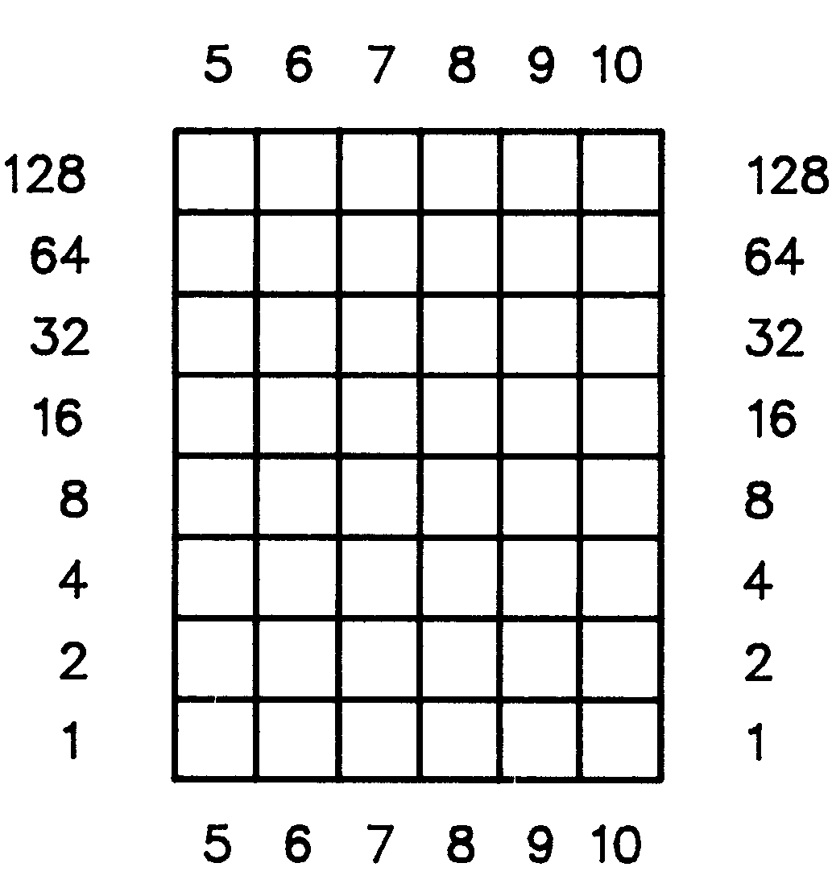
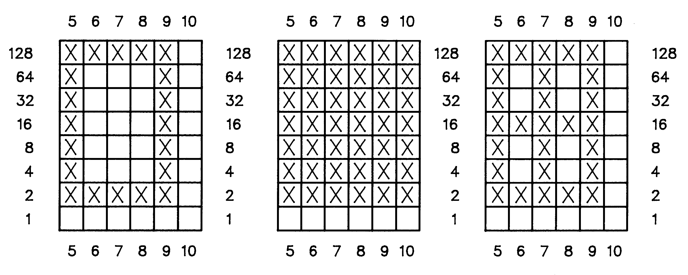

Tips und Tricks zu Protext 128 (Teil 2)
In der ersten Folge wurde beschrieben, wie man sich für die eigenen Verhältnisse einen optimalen Druckertreiber herstellt, wobei die Tastenredefinitionen noch ausstanden. Dieses Thema greifen wir nun auf.
Wenn Sie alle Vorbereitungen gemäß des ersten Teiles in Ausgabe 12/86 getroffen haben, geben Sie <ESC> und <SHIFT + T> ein. Die Frage nach dem Treiberprogramm können Sie nun durch Eingabe des im ersten Teil eingerichteten Programms »treiber 1« beantworten, oder sich durch <RETURN> ansehen, welche Treiber sich überhaupt auf dieser Diskette befinden. Wenn Sie den Treiber ausgewählt haben, befindet sich Protext 128 wieder im Modus »Ändern Druckertreiber«. Nach Druck auf die Taste »5« gelangen Sie zum
Menüpunkt 5) Tastenredefinitionen.
Es ist erstaunlich, welche Möglichkeiten dieser Menüpunkt bietet. Zwei verschiedene, miteinander kombinierbare Möglichkeiten werden geboten. Mit der ersten, einfacheren der beiden wollen wir uns zuerst beschäftigen. Immer wieder kommt es bei Texten, in denen Tabellen enthalten sind, vor, daß man bestimmte Grafikzeichen braucht, um diese Tabellen zu umrahmen und damit vom übrigen Text abzuheben. Die wichtigsten Zeichen sind:
─ ┼ ├ ┤ ┴ ┬ ┌ └ ┘ ┐
In Ihrem Druckerhandbuch oder in der Bedienungsanleitung zum Interface finden Sie die entsprechenden Codes, nach deren Empfang der Drucker diese Zeichen ausgibt (für Protext 128 siehe Tabelle 1).
| Tastenkomb. | Zeichen | Code |
|---|---|---|
| CBM + a | ┌ | f0 |
| CBM + * | ─ | f1 |
| CBM + s | ┐ | f2 |
| CBM + r | ┬ | f3 |
| CBM + q | ├ | f4 |
| CBM + b | │ | f5 |
| CBM + z (am.) | └ | f6 |
| CBM + x | ┘ | f7 |
| CBM + e | ┴ | f8 |
| CBM + w | ┤ | f9 |
| CBM + + (am.) | ┼ | fa |
Nachdem Sie eine Länge von »01« vorgegeben und diese elf Werte eingegeben haben, stehen Ihnen noch vier weitere Zeichen zur Verfügung. Aus Tabelle 2 gehen die häufig gebrauchten Zeichen hervor und wie man sie erreicht.
| Tastenkombination | Zeichen | Code |
|---|---|---|
| SHIFT + Pfeil links | ← | a7 |
| CBM + Komma | é | db |
| SHIFT + 3 | § | c9 |
| SHIFT + = (am.) | £ | c3 |
Nachdem Sie die Sicherheitsabfrage mit »j« beantwortet haben, wählen Sie im Hauptmenü den Punkt 6 und schreiben damit Ihren neuen Druckertreiber auf Diskette, damit Sie Ihren jetzigen Druckertreiber nicht verlieren oder eventuell überschreiben.
Nun kommen wir zu einem besonderen Leckerbissen. Sie können sich bis zu 15 Sonderzeichen definieren und im Druckertreiber speichern, so daß Ihnen diese jederzeit zur Verfügung stehen.
Im Augenblick befinden Sie sich im Textmodus. Drücken Sie die <ESCAPE>-Taste und anschließend »s«. Beantworten Sie die Frage nach dem Druckertreiber mit »treiber 1« und drücken Sie <RETURN>. Nachdem ein eventuell im Speicher vorhandener Text gezeigt wurde, drücken Sie wieder <RETURN>, um wieder in den Texteingabe-Modus zu gelangen. Diese ganze Aktion dient nur dazu, den Druckertreiber »treiber 1« als aktuellen Treiber in den Speicher zu laden. Nun drücken Sie die <ESCAPE>-Taste und anschließend <SHIFT+T>. Die Frage nach dem Treibernamen beantworten Sie mit »treiber 1/sz«. Da dies ein noch nicht vorhandener Name ist, werden Sie vom Programm gefragt, ob es diesen neuen Treiber einrichten soll. Beantworten Sie diese Frage mit »j«. Im Hauptmenü »Ändern Druckertreiber« wählen Sie wieder Menüpunkt »5«: Tastenredefinitionen.
Auf einem Blatt Papier mit Rechenhäuschen erstellen Sie sich mehrere Schablonen, die jeweils sechs Häuschen breit und acht Häuschen hoch sind, dies ist Ihre Matrix, um eigene Zeichen zu erstellen (Bild 1).

Noch einfacher ist es, wenn Sie einige Kopien dieses Rasters anfertigen und damit arbeiten.
Um Ihren Drucker in den sogenannten Bit-Image-Modus zu versetzen und ihn dazu zu bringen, ein Grafikzeichen zu drucken, das in Höhe und Breite einem Großbuchstaben entspricht, bedarf es einer Sequenz aus zehn zweistelligen Hexadezimalzahlen. Die ersten beiden Zahlen schalten den Grafikausdruck mit einfacher Dichte ein, die nächsten beiden geben die Anzahl der folgenden Grafikbytes an. Die folgenden sechs Bytes bezeichnen die Werte der Punktspalten »5« bis »10« aus unserem Raster. Die Bytes »1« bis »4« sind immer gleich, das gilt auch für Byte »10«, das immer »00« ist, wenn Ihre selbstdefinierten Zeichen im Ausdruck jeweils voneinander durch den gleichen Zwischenraum wie Buchstaben getrennt sein sollen. Es gilt also die Regel gemäß Tabelle 3.
| Byte 1: | 1b (immer) |
| Byte 2: | 4b (immer) |
| Byte 3: | 06 (immer) |
| Byte 4: | 00 (immer) |
| Byte 5: | Wert Rasterspalte 5 (hexadezimal) |
| Byte 6: | Wert Rasterspalte 6 (hexadezimal) |
| Byte 7: | Wert Rasterspalte 7 (hexadezimal) |
| Byte 8: | Wert Rasterspalte 8 (hexadezimal) |
| Byte 9: | Wert Rasterspalte 9 (hexadezimal) |
| Byte 10: | Wert Rasterspalte 10 (hexadezimal) |
Hierzu nun ein praktisches Beispiel:
Die folgenden drei Sonderzeichen (Bild 2) sollen definiert werden. Ein Kästchen mit anschließendem Zwischenraum (Bild 3), ein ausgefülltes Kästchen ohne Zwischenraum (Bild 4) und ein Kästchen mit eingebautem Kreuz (Bild 5). Die entsprechenden Bytefolgen können Sie Tabelle 4 entnehmen.

| Byte 1: | 1b (immer) |
| Byte 2: | 4b (immer) |
| Byte 3: | 06 (immer) |
| Byte 4: | 00 (immer) |
| Byte 5: | Wert Rasterspalte 5 (hexadezimal) = 128 + 64 + 32 + 16 + 8 + 4 + 2 + 0 = 254 = fe |
| Byte 6: | Wert Rasterspalte 6 (hexadezimal) = 128 + 0 + 0 + 0 + 0 + 0 + 2 + 0 = 130 = 82 |
| Byte 7: | Wert Rasterspalte 7 (hexadezimal) = 128 + 0 + 0 + 0 + 0 + 0 + 2 + 0 = 130 = 82 |
| Byte 8: | Wert Rasterspalte 8 (hexadezimal) = 128 + 0 + 0 + 0 + 0 + 0 + 2 + 0 = 130 = 82 |
| Byte 9: | Wert Rasterspalte 9 (hexadezimal) = 128 + 64 + 32 + 16 + 8 + 4 + 2 + 0 = 254 = fe |
| Byte 10: | Wert Rasterspalte 10 (hexadezimal) = 0 + 0 + 0 + 0 + 0 + 0 + 0 + 0 = 0 = 00 |
| Byte 1: | 1b (immer) |
| Byte 2: | 4b (immer) |
| Byte 3: | 06 (immer) |
| Byte 4: | 00 (immer) |
| Byte 5: | Wert Rasterspalte 5 (hexadezimal) = 128 + 64 + 32 + 16 + 8 + 4 + 2 + 0 = 254 = fe |
| Byte 6: | Wert Rasterspalte 6 (hexadezimal) = 128 + 64 + 32 + 16 + 8 + 4 + 2 + 0 = 254 = fe |
| Byte 7: | Wert Rasterspalte 7 (hexadezimal) = 128 + 64 + 32 + 16 + 8 + 4 + 2 + 0 = 254 = fe |
| Byte 8: | Wert Rasterspalte 8 (hexadezimal) = 128 + 64 + 32 + 16 + 8 + 4 + 2 + 0 = 254 = fe |
| Byte 9: | Wert Rasterspalte 9 (hexadezimal) = 128 + 64 + 32 + 16 + 8 + 4 + 2 + 0 = 254 = fe |
| Byte 10: | Wert Rasterspalte 10 (hexadezimal) = 128 + 64 + 32 + 16 + 8 + 4 + 2 + 0 = 254 = fe |
| Byte 1: | 1b (immer) |
| Byte 2: | 4b (immer) |
| Byte 3: | 06 (immer) |
| Byte 4: | 00 (immer) |
| Byte 5: | Wert Rasterspalte 5 (hexadezimal) = 128 + 64 + 32 + 16 + 8 + 4 + 2 + 0 = 254 = fe |
| Byte 6: | Wert Rasterspalte 6 (hexadezimal) = 128 + 0 + 0 + 16 + 0 + 0 + 2 + 0 = 146 = 92 |
| Byte 7: | Wert Rasterspalte 7 (hexadezimal) = 128 + 64 + 32 + 16 + 8 + 4 + 2 + 0 = 254 = fe |
| Byte 8: | Wert Rasterspalte 8 (hexadezimal) = 128 + 0 + 0 + 16 + 0 + 0 + 2 + 0 = 146 = 92 |
| Byte 9: | Wert Rasterspalte 9 (hexadezimal) = 128 + 64 + 32 + 16 + 8 + 4 + 2 + 0 = 254 = fe |
| Byte 10: | Wert Rasterspalte 10 (hexadezimal) = 0 + 0 + 0 + 0 + 0 + 0 + 0 + 0 = 0 = 00 |
| Taste | Zeichen | Bytefolge | Drucker |
|---|---|---|---|
| CBM a | ┌ | 1b 4b 06 00 fe 82 82 82 fe 00 | Kästchen |
| CBM s | ┐ | 1b 4b 06 00 fe fe fe fe fe fe | ausgefüllt Kästchen |
| CBM x | ┘ | 1b 4b 06 00 fe 92 fe 92 fe 00 | Kästchen + Kreuz |
Bei den Tastenredefinitionen sind noch die Sonderzeichen erhalten, die Sie bei der Anpassung von »treiber 1« definiert haben. Diese können Sie nun mit den entsprechenden Sequenzen belegen. Die Frage nach der Länge der Sequenz müssen Sie jedoch mit dezimal »10« beziehungsweise hexadezimal »0a« angeben.
So können Sie sich bis zu 15 eigene Zeichen erstellen, die Sie dann in Ihren Texten verwenden können. Für Fortgeschrittene bietet es sich hier an, die neudefinierten Zeichen auch im Bildschirmzeichensatz umzudefinieren, so daß keinerlei Umdenken oder Suchen in Beschreibungen mehr nötig ist.
Bei dieser Gelegenheit könnte man auch noch die Zeichen, die als Steuerzeichen für die Umschaltung des Druckers dienen, mittels des Zeichengenerators von Protext umdefinieren, denn er bietet Ihnen dazu schließlich alle Möglichkeiten. Lassen Sie ruhig Ihrer Fantasie freien Lauf und denken Sie sich für sie sinnvolle Zeichen aus.
Wenn Sie nun alle Schritte dieses kleinen Druckeranpassungskurses durchgeführt haben, sollte Ihr Drucker optimal mit Protext zusammenarbeiten. Natürlich gilt speziell diese Anpassung nur für den Star SG-10 mit original Star-Einbau-Interface oder dem externen Originalinterface. Besitzern anderer Drucker oder anderer Interfaces sollte es jedoch ein leichtes sein, ihren Drucker entsprechend anzupassen, da sie nur die entsprechende Sekundäradresse für Transparentdruck, bei dem die Codes unverändert zum Drucker gelangen, im Handbuch nachschlagen müssen. Was die Steuercodes betrifft, so dürfte es keine allzu großen Schwierigkeiten geben, da die meisten der Steuercodes der Star-Drucker mit den Epson-Druckern kompatibel sind. Sollte Ihr Drucker nicht über die Commodore-Grafikzeichen verfügen, können Sie sich diese ja über den Bit-Image-Modus selbst definieren. Die bei den Folgen dieser Druckeranpassung durchgeführten Veränderungen, das Treiberprogramm und ein Demo finden Sie auf der Programmservicediskette zu dieser Ausgabe.
(Henk Driessen/bj)